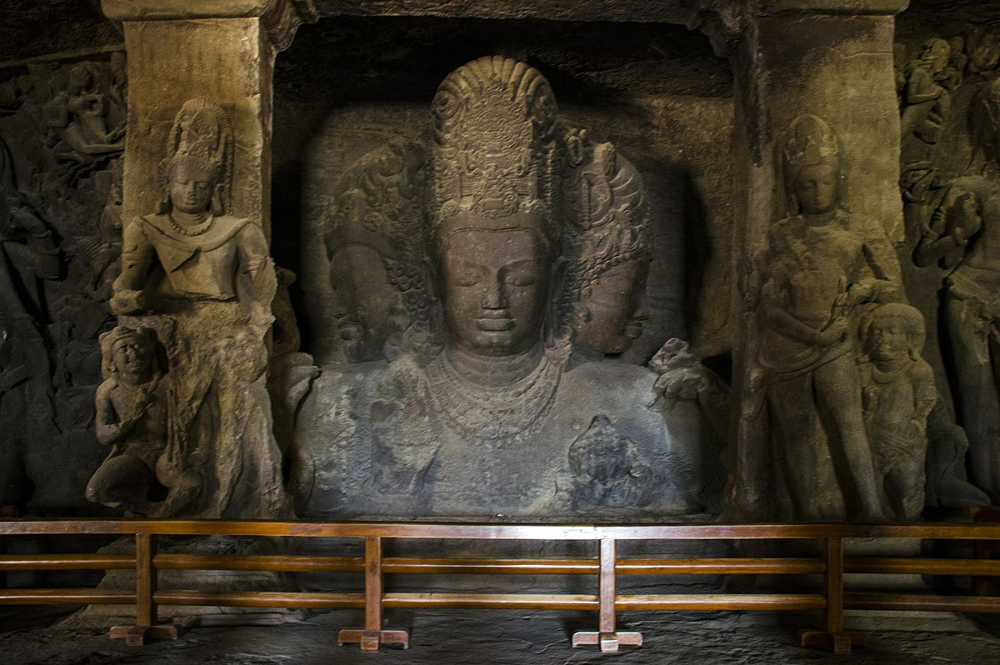
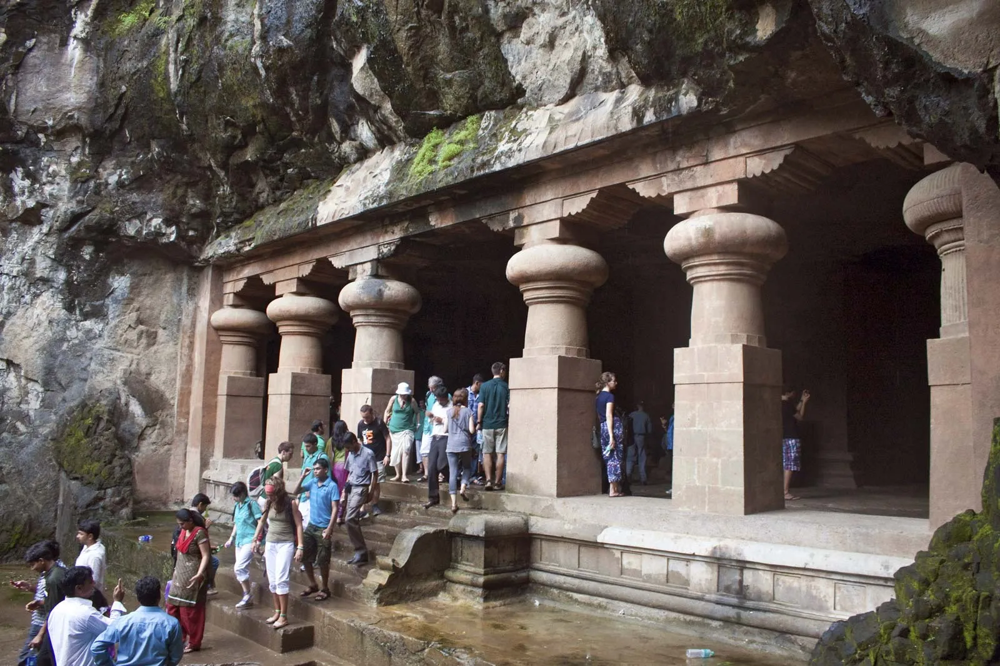
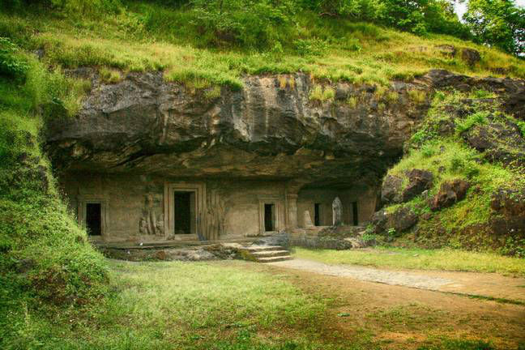
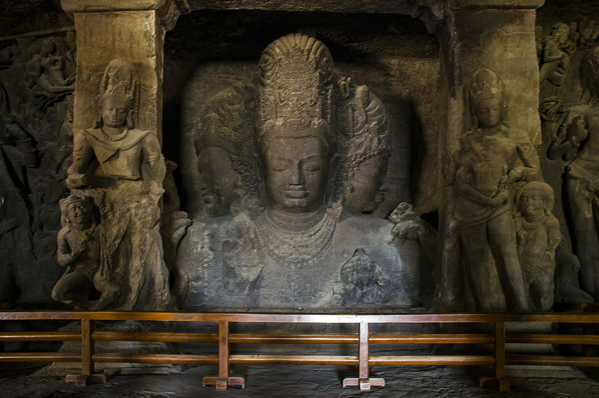
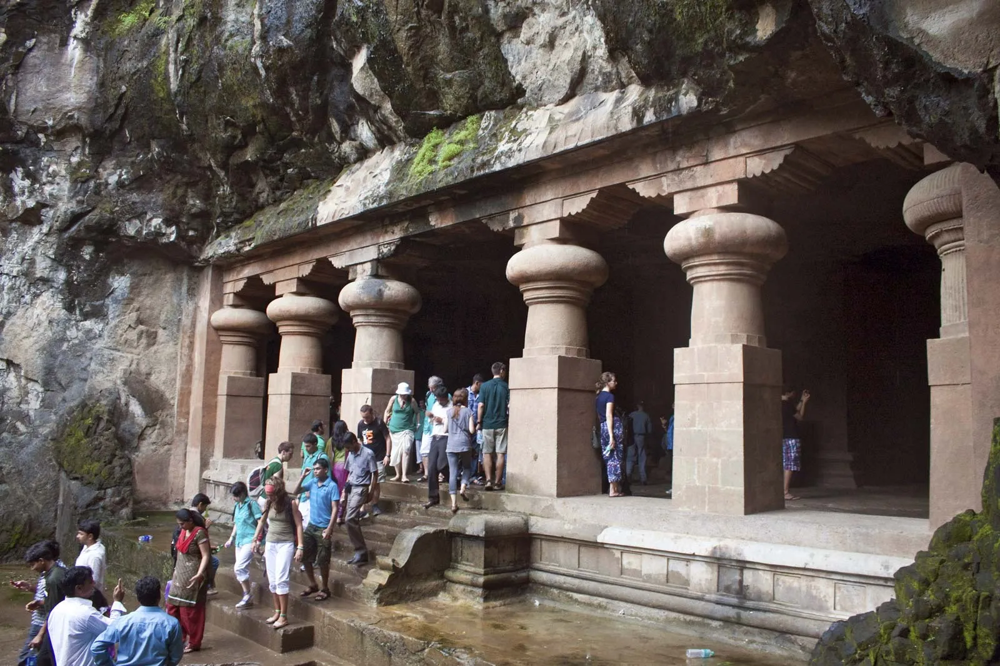
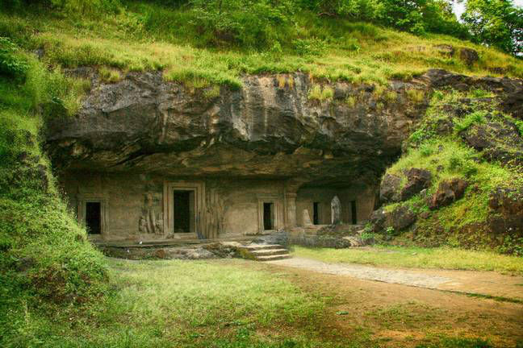

Elephanta Caves
Outstanding Universal Value
Brief synthesis
The Elephanta Caves are located in Western India on Elephanta Island (otherwise known as the Island of Gharapuri), which features two hillocks separated by a narrow valley. The small island is dotted with numerous ancient archaeological remains that are the sole testimonies to its rich cultural past. These archaeological remains reveal evidence of occupation from as early as the 2nd century BC.
The 7-metre-high masterpiece “Sadashiva” dominates the entrance to Cave 1. The sculpture represents three aspects of Shiva: the Creator, the Preserver, and the Destroyer, identified, respectively, with Aghora or Bhairava (left half), Taptapurusha or Mahadeva (central full face), and Vamadeva or Uma (right half). Representations of Nataraja, Yogishvara, Andhakasuravadha, Ardhanarishwara, Kalyanasundaramurti, Gangadharamurti, and Ravanaanugrahamurti are also noteworthy for their forms, dimensions, themes, representations, content, alignment and execution.
The layout of the caves, including the pillar components, the placement and division of the caves into different parts, and the provision of a sanctum or Garbhagriha of sarvatobhadra plan, are important developments in rock-cut architecture. The Elephanta Caves emerged from a long artistic tradition, but demonstrate refreshing innovation.
Criteria : The fifteen large reliefs surrounding the lingam chapel in the main Elephanta Cave not only constitute one of the greatest examples of Indian art but also one of the most important collections for the cult of Shiva.
Integrity
All the archaeological components in the Elephanta Caves are preserved in their natural settings. There is further scope to reveal archaeological material and enhance information by exposing the buried stupas. At the time of the listing the need was noted to safeguard the fragile site from nearby industrial development. .
Authenticity
The authenticity of the property has been well maintained since its inscription on the World Heritage List, despite certain repairs on the façade and pillars that have been carried out to ensure the structural stability of the monument. Besides the caves, Elephanta Island possesses archaeological remains from as early as the 2nd century BC and from the Portuguese period, as witnessed, respectively, by stupas buried towards the eastern side of the hillock and a canon located at its top.
Management and protection requirements
The property is protected primarily by the Archaeological Survey of India, which also undertakes the management of the Elephanta Caves with the assistance of other departments, including the Forest Department, Tourism Department, MMRDA, Urban Development Department, Town Planning Department, and the Gram panchayat of the Government of Maharashtra, all acting under the various legislations of the respective departments, such as the Ancient Monuments and Archaeological Sites and Remains Act (1958) and Rules (1959).
Sustaining the Outstanding Universal Value of the property over time will require completing, approving and implementing a Conservation Management Plan to guide restoration and conservation works; addressing saline activity and the general deterioration of the caves’ rock surfaces using internationally recognised scientific standards and techniques; safeguarding the property from nearby industrial development; and considering exposing the buried stupas.
 




